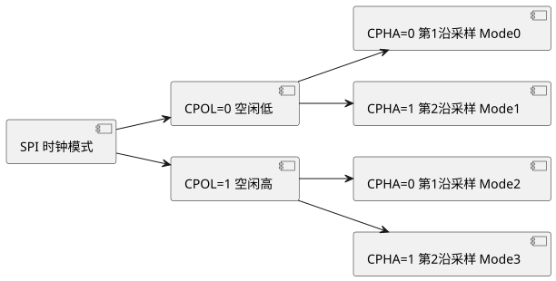
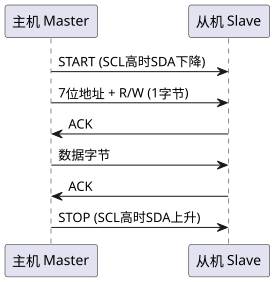

第 20 章 SPI 与 I2C 总线
学习目标
- 理解 SPI 总线协议，掌握主从模式、CPOL/CPHA 4 种时序模式
- 学会使用 HAL_SPI 库函数读写 W25Q64 Flash，完成擦除、编程、读取全流程
- 理解 I2C 总线协议，掌握起始/停止/应答时序与寻址方式
- 能够使用 HAL_I2C 库函数驱动 SSD1306 OLED 显示字符与图形
- 掌握 CubeMX 配置 SPI/I2C 的 DMA 与中断模式，并理解硬件外设与软件模拟的选择策略
20.1 SPI 协议详解
SPI（Serial Peripheral Interface，串行外设接口）是 Motorola 公司提出的高速、全双工、同步串行通信总线，仅用 4 根线即可完成主从通信，广泛应用于 Flash、SD 卡、LCD 屏、传感器等外设的连接。
20.1.1 SPI 四线制
| 信号 | 全称 | 方向 | 说明 |
|---|---|---|---|
| SCK | Serial Clock | 主→从 | 同步时钟 |
| MOSI | Master Out Slave In | 主→从 | 主输出从输入 |
| MISO | Master In Slave Out | 从→主 | 主输入从输出 |
| NSS/CS | Slave Select / Chip Select | 主→从 | 片选，低有效 |
20.1.2 CPOL 与 CPHA 4 种模式
SPI 时序由 CPOL（Clock Polarity，时钟极性）与 CPHA（Clock Phase，时钟相位）共同决定，共 4 种组合：
| 模式 | CPOL | CPHA | 空闲电平 | 采样沿 |
|---|---|---|---|---|
| Mode 0 | 0 | 0 | 低 | 第 1 个边沿（上升沿） |
| Mode 1 | 0 | 1 | 低 | 第 2 个边沿（下降沿） |
| Mode 2 | 1 | 0 | 高 | 第 1 个边沿（下降沿） |
| Mode 3 | 1 | 1 | 高 | 第 2 个边沿（上升沿） |

查看 PlantUML 源码
@startuml
skinparam defaultFontName "Microsoft YaHei"
skinparam backgroundColor #ffffff
left to right direction
component "SPI 时钟模式" as A
component "CPOL=0 空闲低" as B
component "CPOL=1 空闲高" as C
component "CPHA=0 第1沿采样 Mode0" as D
component "CPHA=1 第2沿采样 Mode1" as E
component "CPHA=0 第1沿采样 Mode2" as F
component "CPHA=1 第2沿采样 Mode3" as G
A --> B
A --> C
B --> D
B --> E
C --> F
C --> G
@endumlSPI 通信过程：主设备拉低 NSS → 主设备产生 SCK → 主从双方在 MOSI/MISO 上同时收发数据 → 通信结束拉高 NSS。由于是全双工，主设备发 1 字节同时也接收 1 字节，这种特性常被称为"交换"通信。
20.2 HAL_SPI 库函数与 W25Q64 Flash 读写
W25Q64 是华邦（Winbond）公司生产的 64Mbit（8MB）SPI Flash，是 STM32 学习板最常见的外扩存储芯片。其关键命令包括：
| 命令 | 16进制 | 说明 |
|---|---|---|
| READ | 0x03 | 读取数据 |
| WRITE_ENABLE | 0x06 | 写使能 |
| PAGE_PROGRAM | 0x02 | 页编程（最多 256B） |
| SECTOR_ERASE | 0x20 | 4KB 扇区擦除 |
| READ_ID | 0x9F | 读取 JEDEC ID |
| READ_STATUS | 0x05 | 读状态寄存器 |
/* w25q64.c - W25Q64 读写驱动 */
#include "main.h"
extern SPI_HandleTypeDef hspi1;
#define W25_CS_LOW() HAL_GPIO_WritePin(GPIOA, GPIO_PIN_4, GPIO_PIN_RESET)
#define W25_CS_HIGH() HAL_GPIO_WritePin(GPIOA, GPIO_PIN_4, GPIO_PIN_SET)
/* 等待 Flash 空闲 */
static void w25_wait_busy(void)
{
uint8_t cmd = 0x05;
uint8_t status;
do {
W25_CS_LOW();
HAL_SPI_Transmit(&hspi1, &cmd, 1, 100);
HAL_SPI_Receive(&hspi1, &status, 1, 100);
W25_CS_HIGH();
} while (status & 0x01); /* BUSY 位 */
}
/* 读取 JEDEC ID */
void w25_read_id(uint8_t *mid, uint16_t *did)
{
uint8_t cmd = 0x9F;
uint8_t buf[3];
W25_CS_LOW();
HAL_SPI_Transmit(&hspi1, &cmd, 1, 100);
HAL_SPI_Receive(&hspi1, buf, 3, 100);
W25_CS_HIGH();
*mid = buf[0];
*did = (buf[1] << 8) | buf[2];
}
/* 4KB 扇区擦除 */
void w25_erase_sector(uint32_t addr)
{
uint8_t cmd[4] = { 0x20,
(addr >> 16) & 0xFF,
(addr >> 8) & 0xFF,
addr & 0xFF };
/* 1. 写使能 */
uint8_t we = 0x06;
W25_CS_LOW();
HAL_SPI_Transmit(&hspi1, &we, 1, 100);
W25_CS_HIGH();
/* 2. 发送擦除命令 */
W25_CS_LOW();
HAL_SPI_Transmit(&hspi1, cmd, 4, 100);
W25_CS_HIGH();
/* 3. 等待擦除完成 */
w25_wait_busy();
}
/* 页编程：最多 256 字节，不能跨页 */
void w25_page_program(uint32_t addr, uint8_t *data, uint16_t len)
{
uint8_t cmd[4] = { 0x02,
(addr >> 16) & 0xFF,
(addr >> 8) & 0xFF,
addr & 0xFF };
uint8_t we = 0x06;
W25_CS_LOW();
HAL_SPI_Transmit(&hspi1, &we, 1, 100);
W25_CS_HIGH();
W25_CS_LOW();
HAL_SPI_Transmit(&hspi1, cmd, 4, 100);
HAL_SPI_Transmit(&hspi1, data, len, 1000);
W25_CS_HIGH();
w25_wait_busy();
}
/* 读取数据 */
void w25_read(uint32_t addr, uint8_t *buf, uint16_t len)
{
uint8_t cmd[4] = { 0x03,
(addr >> 16) & 0xFF,
(addr >> 8) & 0xFF,
addr & 0xFF };
W25_CS_LOW();
HAL_SPI_Transmit(&hspi1, cmd, 4, 100);
HAL_SPI_Receive(&hspi1, buf, len, 2000);
W25_CS_HIGH();
}以下为使用示例：先擦除扇区 0，再写入字符串"Hello STM32!"，最后读回并校验。
uint8_t wr[] = "Hello STM32!";
uint8_t rd[32] = {0};
uint8_t mid;
uint16_t did;
w25_read_id(&mid, &did); /* 应返回 EF 40 17 */
w25_erase_sector(0x000000);
w25_page_program(0x000000, wr, sizeof(wr));
w25_read(0x000000, rd, sizeof(wr));
printf("Read back: %s\r\n", rd);20.3 I2C 协议详解
I2C（Inter-Integrated Circuit）是 Philips 公司（现 NXP）提出的两线制、半双工、同步串行总线，仅需 SCL（Serial Clock Line，时钟线）与 SDA（Serial Data Line，数据线）两根线即可完成多主多从通信，广泛用于 EEPROM、传感器、OLED 显示等低速外设。
20.3.1 起始与停止信号
I2C 通信由起始条件（START）开始、由停止条件（STOP）结束：
- START：SCL 为高电平时，SDA 由高变低。
- STOP：SCL 为高电平时，SDA 由低变高。
20.3.2 数据传输与应答
每个时钟脉冲传输 1 位数据，数据在 SCL 高电平期间必须保持稳定，仅在 SCL 低电平期间允许变化。每发送 8 位数据后，接收方需给出 1 位应答（ACK=0 表示应答，NACK=1 表示非应答）。

查看 PlantUML 源码
@startuml
skinparam defaultFontName "Microsoft YaHei"
skinparam backgroundColor #ffffff
participant "主机 Master" as M
participant "从机 Slave" as S
M -> S : START (SCL高时SDA下降)
M -> S : 7位地址 + R/W (1字节)
S -> M : ACK
M -> S : 数据字节
S -> M : ACK
M -> S : STOP (SCL高时SDA上升)
@enduml20.3.3 寻址方式
I2C 设备使用 7 位地址 + 1 位读写位组成 8 位地址字节。例如 SSD1306 OLED 默认地址 0x3C（7 位），写入时发送 0x78，读取时发送 0x79。部分芯片支持 10 位地址扩展。
20.4 HAL_I2C 库函数与 OLED SSD1306 显示
SSD1306 是最常见的 0.96 寸 OLED 控制器，128×64 像素，I2C 接口，地址 0x3C 或 0x3D。HAL 库提供以下常用 I2C 函数：
HAL_StatusTypeDef HAL_I2C_Master_Transmit(I2C_HandleTypeDef *hi2c,
uint16_t DevAddress, uint8_t *pData, uint16_t Size, uint32_t Timeout);
HAL_StatusTypeDef HAL_I2C_Master_Receive(I2C_HandleTypeDef *hi2c,
uint16_t DevAddress, uint8_t *pData, uint16_t Size, uint32_t Timeout);
HAL_StatusTypeDef HAL_I2C_Mem_Write(I2C_HandleTypeDef *hi2c,
uint16_t DevAddress, uint16_t MemAddress, uint16_t MemAddSize,
uint8_t *pData, uint16_t Size, uint32_t Timeout);以下为 SSD1306 显示驱动核心代码，使用 HAL_I2C_Mem_Write 简化命令/数据封装。
/* ssd1306.c - OLED SSD1306 显示驱动 */
#include "main.h"
extern I2C_HandleTypeDef hi2c1;
#define SSD1306_ADDR 0x78 /* 0x3C << 1 */
#define SSD1306_CMD 0x00 /* Co=0, D/C=0 命令 */
#define SSD1306_DAT 0x40 /* Co=0, D/C=1 数据 */
/* 发送单条命令 */
static void ssd1306_write_cmd(uint8_t cmd)
{
HAL_I2C_Mem_Write(&hi2c1, SSD1306_ADDR, SSD1306_CMD,
1, &cmd, 1, 100);
}
/* 发送显示数据 */
static void ssd1306_write_data(uint8_t *buf, uint16_t len)
{
HAL_I2C_Mem_Write(&hi2c1, SSD1306_ADDR, SSD1306_DAT,
1, buf, len, 200);
}
/* 初始化序列 */
void ssd1306_init(void)
{
HAL_Delay(100);
ssd1306_write_cmd(0xAE); /* Display Off */
ssd1306_write_cmd(0x20); ssd1306_write_cmd(0x10); /* Page addr mode */
ssd1306_write_cmd(0xB0); /* Page 0 */
ssd1306_write_cmd(0xC8); /* COM reverse */
ssd1306_write_cmd(0x00); /* Low col */
ssd1306_write_cmd(0x10); /* High col */
ssd1306_write_cmd(0x40); /* Start line */
ssd1306_write_cmd(0x81); ssd1306_write_cmd(0xFF); /* Contrast */
ssd1306_write_cmd(0xA1); /* Segment remap */
ssd1306_write_cmd(0xA6); /* Normal display */
ssd1306_write_cmd(0xA8); ssd1306_write_cmd(0x3F); /* Multiplex 1/64 */
ssd1306_write_cmd(0xD3); ssd1306_write_cmd(0x00); /* Display offset */
ssd1306_write_cmd(0xD5); ssd1306_write_cmd(0x80); /* Clock divide */
ssd1306_write_cmd(0xD9); ssd1306_write_cmd(0xF1); /* Pre-charge */
ssd1306_write_cmd(0xDA); ssd1306_write_cmd(0x12); /* COM pins */
ssd1306_write_cmd(0xDB); ssd1306_write_cmd(0x40); /* VCOMH */
ssd1306_write_cmd(0x8D); ssd1306_write_cmd(0x14); /* Charge pump */
ssd1306_write_cmd(0xAF); /* Display On */
}
/* 设置光标位置 */
void ssd1306_set_pos(uint8_t page, uint8_t col)
{
ssd1306_write_cmd(0xB0 + page);
ssd1306_write_cmd(0x00 | (col & 0x0F));
ssd1306_write_cmd(0x10 | (col >> 4));
}
/* 清屏 */
void ssd1306_clear(void)
{
uint8_t buf[128] = {0};
uint8_t p;
for (p = 0; p < 8; p++) {
ssd1306_set_pos(p, 0);
ssd1306_write_data(buf, 128);
}
}
/* 在 (x, page) 显示一个 8x16 字符 */
void ssd1306_show_char(uint8_t x, uint8_t page, char ch)
{
extern const uint8_t font8x16[][16];
uint8_t i;
uint8_t c = ch - ' ';
ssd1306_set_pos(page, x);
for (i = 0; i < 8; i++) ssd1306_write_cmd_skip(); ;
/* 上半 8 字节 */
uint8_t up[8];
for (i = 0; i < 8; i++) up[i] = font8x16[c][i];
ssd1306_set_pos(page, x);
ssd1306_write_data(up, 8);
/* 下半 8 字节 */
uint8_t down[8];
for (i = 0; i < 8; i++) down[i] = font8x16[c][8 + i];
ssd1306_set_pos(page + 1, x);
ssd1306_write_data(down, 8);
}20.5 CubeMX 配置 SPI/I2C
20.5.1 SPI 配置（W25Q64）
- 选择 SPI1，Mode 设为 Full-Duplex Master。
- PA5/PA6/PA7 自动分配为 SCK/MISO/MOSI，PA4 手动设为 GPIO_Output 作为 CS。
- Parameter Settings：
- Frame Format: Motorola
- Data Size: 8 Bits
- First Bit: MSB First
- Prescaler: 设置 SPI 时钟为 21MHz（FPCLK/4）
- Clock Polarity: High（CPOL=1）
- Clock Phase: 2 Edge（CPHA=1）→ Mode 3
- NSS: Software（避免硬件 NSS 误触发）
- 按需在 DMA Settings 添加 SPI1_TX / SPI1_RX。
20.5.2 I2C 配置（SSD1306）
- 选择 I2C1，Mode 设为 I2C。
- PB6/PB9 自动分配为 SCL/SDA（也可选 PB8/PB9 等备用引脚）。
- Parameter Settings：
- I2C Speed Mode: Fast Mode 400kHz
- Addressing Mode: 7-bit
- Dual Address Acknowledged: Disable
- Analog Noise Filter: Enable
- 启用 I2C1_EV_IRQn 与 I2C1_ER_IRQn 中断（中断模式时）。
- DMA Settings 添加 I2C1_TX（OLED 只发送不接收，可省略 RX）。
20.6 软件模拟 vs 硬件外设选择
当外设引脚冲突或硬件 I2C/SPI 不可用时，可使用 GPIO 软件"位爆炸"（Bit-Bang）模拟。两者对比如下：
| 对比项 | 硬件外设 | 软件模拟（Bit-Bang） |
|---|---|---|
| 速度 | 高（可达数十 Mbps） | 低（取决于 GPIO 翻转速度，通常 <1 Mbps） |
| CPU 占用 | 低（DMA 几乎零占用） | 高（CPU 全程参与） |
| 引脚灵活性 | 固定引脚（受 AF 映射限制） | 任意 GPIO |
| 时序精度 | 硬件保证，非常稳定 | 受中断/调度影响，可能抖动 |
| 实现复杂度 | 需查寄存器/HAL 库 | 代码直观，调试容易 |
| 典型应用 | SPI Flash、SD 卡、高分辨率显示 | 简单的 EEPROM、低速 OLED、传感器 |
| 可移植性 | 厂商强相关 | 跨平台通用 |
本章小结
- SPI 是 4 线全双工同步串行总线，由 CPOL/CPHA 决定 4 种时序模式，适合高速外设如 W25Q64 Flash。
- I2C 是 2 线半双工同步串行总线，通过 START/STOP/ACK 时序与 7 位地址寻址，适合低速外设如 SSD1306 OLED。
- HAL_SPI_Transmit/Receive 配合 GPIO 控制 CS 即可完成 W25Q64 擦除、页编程、读取全流程。
- HAL_I2C_Mem_Write 用 MemAddress 封装命令/数据，可大幅简化 SSD1306 驱动代码。
- CubeMX 配置 SPI 选 Mode 3，I2C 选 Fast Mode 400kHz；DMA 模式可减轻 CPU 负担。
- 硬件外设与软件模拟各有优劣，应根据速度、引脚、CPU 占用灵活选择。
思考题与习题
- 简述 SPI 的 4 种时钟模式（CPOL/CPHA），W25Q64 Flash 应使用哪种模式？为什么？
- 编写程序：使用 SPI1 读取 W25Q64 JEDEC ID，并与数据手册对比验证通信成功。
- I2C 的 START 与 STOP 信号如何定义？为什么 SCL 高电平期间 SDA 必须保持稳定？
- 使用 HAL_I2C 驱动 SSD1306 在 OLED 第一行居中显示"Hello MCU"。
- CubeMX 配置 SPI1 的 DMA 模式，编写基于 DMA 的大块 Flash 读取程序，对比 CPU 占用差异。
- 对比软件模拟 I2C 与硬件 I2C 的优劣，并说明何种场景适合用软件模拟。
参考文献
- ST 官方. STM32F405/415/407/417 参考手册 RM0090 [Z]. 2024. https://www.st.com/
- Winbond. W25Q64JV Datasheet [Z]. 2024. https://www.winbond.com/
- Solomon Systech. SSD1306 Datasheet [Z]. 2024. https://www.solomon-systech.com/
- NXP Semiconductors. I2C-bus Specification and User Manual (UM10204) [Z]. 2021.
- 正点原子. STM32F4 开发指南——HAL 库版本 [M]. 北京：北京航空航天大学出版社, 2020.